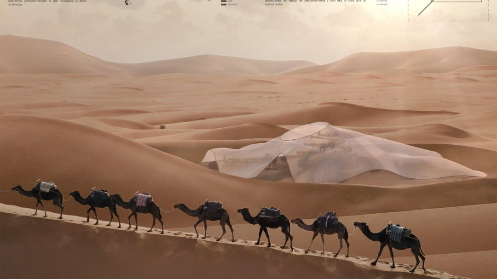

Arenas del tiempo – Innatur 9

La desertificación se presenta como una de las grandes amenazas de nuestro tiempo, no solo del aumento de la extensión de desiertos existentes,
sino el proceso de degradación de las tierras en zonas áridas, semiáridas y subhúmedas secas. Es un proceso gradual de
pérdida de productividad del suelo y reducción de la cubierta vegetal por el efecto de las actividades humanas y de las variaciones climáticas
como sequías prolongadas e inundaciones.
Siendo un factor importante el humano en los procesos de desertificación, como arquitectos nos vemos comprometidos a dar visibilidad a esta amenaza.
La razón de elegir este enclave tan singular, destino de multitud de turistas que anhelan conocer la magnitud del desierto, no es otra que la de ayudar a concienciar sobre los problemas derivados de la desertificación.
La idea se muestra como una reinterpretación de los templos egipcios. Una alusión al concepto de ascensión, de cómo los templos se alzan al cielo.
Ese concepto de hito, enclave de rituales, culto y gloria, nos sirvió para concebir nuestra propuesta como un lugar donde el conocimiento fuese la piedra angular,
para que todos los visitantes del mismo pudieran observar la magnitud del desierto, y, por ende, comprender el futuro “distópico”
no tan alejado de la ciencia ficción, que como seres humanos estamos encargados de evitar.
Una metáfora envuelve el recorrido. La ascensión hacia la verdad no deja de lado la realidad, realidad natural contenida y protegida,
frágil, en riesgo de desaparecer. El visitante comprenderá una vez arriba, una vez alcanzado el conocimiento, como la naturaleza se ve acorralada,
en riesgo de desaparecer la vida que la misma nutre.
Proyecto realizado junto a Eduardo Rodriguez Gallego (@edu_rodriguezg) y Pablo Mesonero Checa (@pablomesonerocheca).